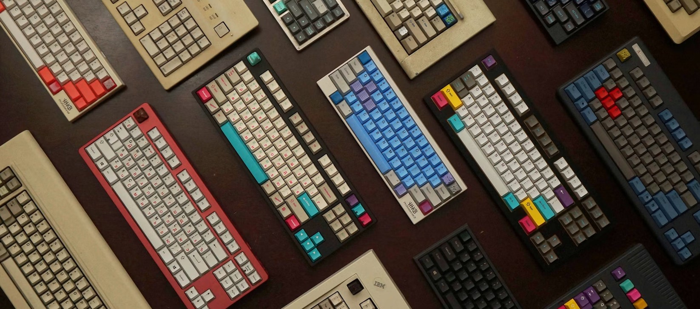

Featured Keyboards
Welcome to the World of Custom Keyboards
Building a mechanical keyboard is a rewarding hobby that allows you to customize a keyboard to your preferences, both in functionality and aesthetics. Whether you're looking for a new hobby, enhancing your typing experience, or creating a personalized gift, building a keyboard is a fun and fulfilling project.
You can expect to spend anywhere from $50 to thousands of dollars depending on your level of passion and customization. It’s recommended to start with a budget-friendly build, under $200, especially if you’re new to the hobby. This process takes time and patience but is incredibly rewarding.
Custom keyboards allow you to fine-tune the typing experience, sound, and aesthetics to your liking. Experiment with various components and mods to create something truly unique!
Why Build a Custom Keyboard?
- Create a typing experience tailored to your needs.
- Enjoy a highly customizable aesthetic.
- Explore a new, hands-on hobby.
- Build something unique and long-lasting.
Many people are inspired to build their own keyboard after hearing one they love. Remember, the sound and feel of a keyboard depend on many factors, including the case, PCB, switches, stabilizers, and even the desk mat. Experimenting with these elements is part of the fun!
Get Started
Ready to begin? Use the navigation above to explore our guide, starting with selecting the right parts for your build.